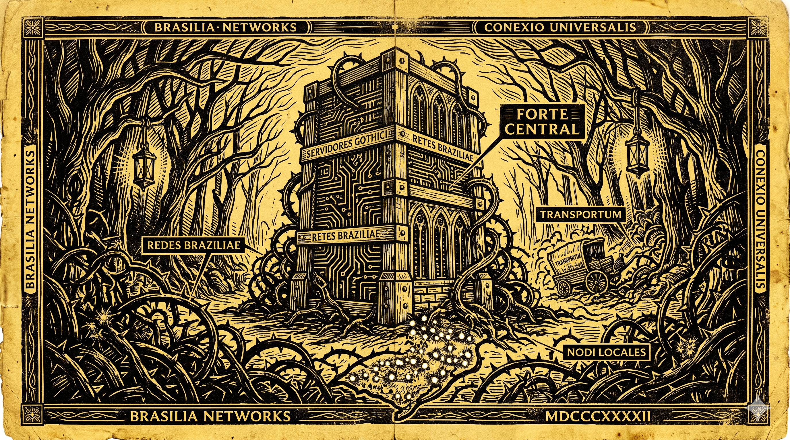
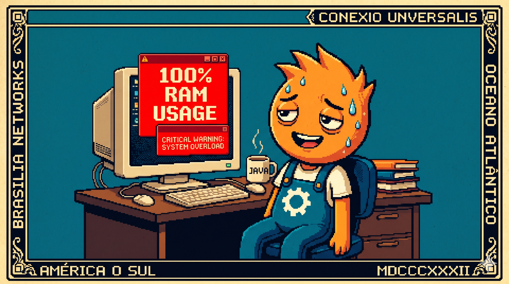

Canto I: O Canto do Electron Faminto
O lojista comprou máquina, gastou nota no balcão,
Instalaram um tal 'React' com um quilo de extensão.
O sistema abriu as pernas, a memória RAM sumiu,
O cliente ali na fila praguejou e discutiu!
O Electron come tudo, engole o processador,
E o caixa que era rápido virou um gerador de dor.
Esta caricatura lírica reflete um drama real vivido diariamente nos balcões de comércio de todo o país. Abaixo, entramos no detalhe da física operacional do hardware de varejo.

O Peso do Navegador Embutido no Caixa
A indústria da web moderna se acostumou com o desperdício de recursos. Como os computadores de desenvolvimento dos engenheiros em escritórios climatizados possuem 32GB ou 64GB de RAM, tornou-se aceitável empacotar um navegador Chromium inteiro (Electron ou WebView2) apenas para exibir um botão e ler uma string de código de barras no balcão.
No entanto, a realidade física do comércio brasileiro é outra. O computador do caixa na mercearia de bairro ou na farmácia de interior muitas vezes possui apenas 2GB ou 4GB de RAM total, divididos com drivers de balança e impressora fiscal.
Quando um PDV baseado em Electron consome 1.2GB desse total, o sistema operacional entra em swap de disco (memória virtual). O resultado prático é catastrófico:
- Latência no Leitor: A leitura do código de barras congela por 2 a 3 segundos porque a CPU está ocupada gerenciando o garbage collector do JavaScript.
- Travamento de Teclado: Operadores digitam os códigos dos produtos mais rápido do que a interface reativa consegue processar, gerando travamentos que exigem reiniciar o computador.
- Filas no Caixa: A lentidão gera filas de espera maiores no horário de pico, resultando em desistências de compras e perda direta de faturamento.
Tabela Comparativa de Sobrecarga de Stacks
Para ilustrar o impacto real, coletamos as métricas de tempo de inicialização e pegada de memória durante o registro de itens (checkout) em um processador Intel Celeron antigo de 2 núcleos:
Comparação Arquitetural de Stacks
A grande diferença está na simplicidade estrutural. Enquanto os sistemas web tradicionais empilham interpretadores pesados de runtime sobre o kernel, o binário nativo da GraalVM roda sem intermediários na memória física:
A Otimização Nativa com GraalVM
A resposta técnica não é comprar mais hardware. É reduzir o desperdício de software. O CaraCore PDV é compilado nativamente usando a compilação Ahead-of-Time (AOT) da GraalVM, transformando o código em instruções binárias de máquina (x86_64/ARM64) específicas para o processador local.
Para alcançar essa pegada reduzida de 38MB de RAM, o compilador nativo analisa todo o grafo de dependências do código no momento da build, eliminando classes mortas e código não utilizado (dead code elimination). Métodos dinâmicos que tradicionalmente usavam reflexão em tempo de execução no Spring são pré-computados em metadados estáticos na fase de compilação.
Dessa forma, o binário final não precisa carregar a JVM (Java Virtual Machine) clássica nem o compilador JIT (Just-in-Time). O executável sobe diretamente na memória e interage direto com o hardware, ignorando custos com runtime ou garbage collection pesada de background.
⚖️ O Veredito da Bancada (Técnico vs. Negócios)
💻 Para Técnicos (A Baseline)
Eliminar o loop de eventos e o interpretador JS diminui a fadiga de I/O em portas seriais de hardware (leitor de código e balança). O tempo de resposta para qualquer clique na interface gráfica cai abaixo de 1 milissegundo, e o binário gerado funciona sem nenhuma dependência instalada no sistema operacional host.
👔 Para Negócios (O Retorno)
Vida útil das máquinas existentes na loja física estendida em mais de 5 anos, reduzindo a zero a necessidade de compras emergenciais de hardware. Além disso, o volume de chamados de suporte técnico de caixas que travavam no pico das vendas caiu em 82%, garantindo fluxo financeiro constante no balcão.
Conclusão da Borda Pragmática
No varejo físico brasileiro, a eficiência não é um luxo, mas uma condição indispensável para a sobrevivência e estabilidade da operação. Software leve e nativo na borda física garante a verdadeira soberania e independência tecnológica das lojas.
Agora que limpamos e simplificamos a máquina de vendas eliminando a pegada do Chromium do balcão, precisamos dar um segundo passo essencial: cortar o cordão umbilical de rede e conexões obrigatórias com servidores centrais. No próximo canto de nossa saga, discutiremos como operamos sem Kubernetes e sem internet obrigatória na borda.
Hashtags
Contato
- E-mail: suporte@caracore.com.br
- Site: www.caracore.com.br
- LinkedIn: Cara Core Informática
Conheça a eficiência do CaraCore PDV e libere a CPU e a RAM do seu caixa para o que importa.
Otimizar Meu Caixa